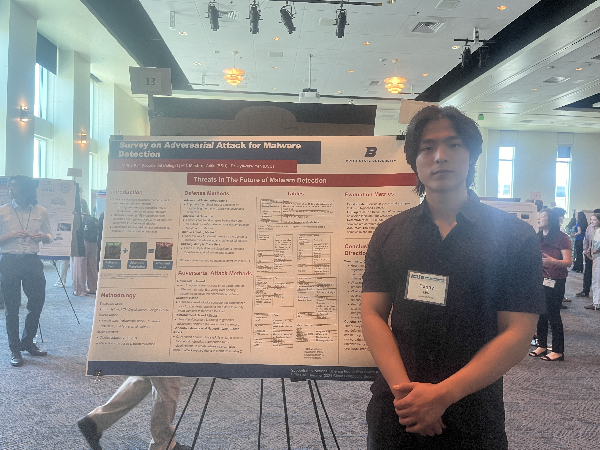

Here are some projects or just things I'm proud of that I’ve worked on during my academic journey and personal exploration in computer science.
Portfolio Website
I created this portfolio website during winter break as a way to explore something new and dive deeper into web development. My previous project sparked an interest in UI design, and I wanted to challenge myself to build something that was both functional and visually appealing using HTML, CSS, and JavaScript. Plus, I liked the idea of having a personal website… it makes me feel famous :).
View Project
Book Website/Database
In my CS Practicum class, I worked in a team of 3 to develop a website for a professor in the psychology department to assist with their research. The project involved creating a backend database using MySQL to efficiently store and manage research data, while the front end was built with React and Node.js to ensure a responsive and user-friendly interface. It was a great experience working as a team, combining our skills to deliver a functional tool that supports meaningful academic research.
View Project
Taskr App
In my Mobile Apps class, I collaborated with two classmates to develop an Android app called Taskr. The app is functionally similar to TaskRabbit, connecting users who need help with tasks to those willing to complete them. We used Firebase for the backend database, ensuring real-time updates and reliable data storage, and developed the app in Android Studio. The project was a great opportunity to learn about mobile app development while creating a practical solution for everyday needs.
View Project
REU: Boise State University
Over the summer, I had the incredible opportunity to participate in the Cloud Computing and Privacy REU at Boise State University. My research focused on exploring different types of adversarial attacks against intelligent malware detectors, analyzing how these systems can be manipulated and how they might be improved to better withstand such attacks. The program concluded with my attendance at the Idaho Conference on Undergraduate Research (ICUR), where I presented our findings and engaged with other undergraduate researchers from diverse fields.
Here is a picture of me presenting at the Idaho Conference on Undergraduate Research!
